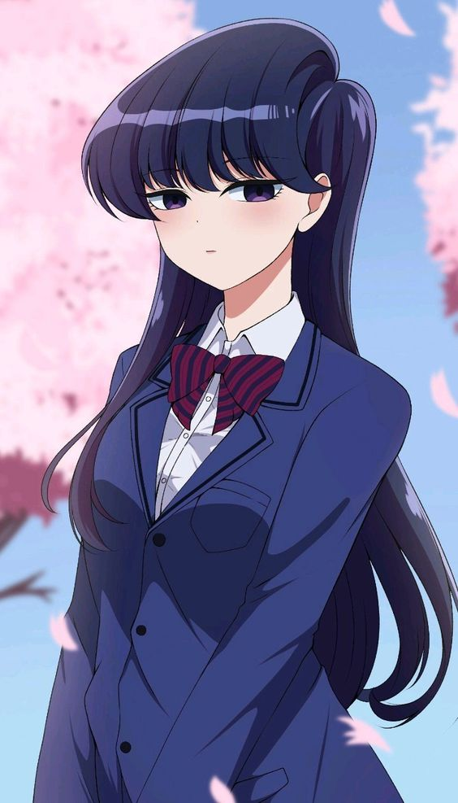

Profil

Komi Shouko, atau yang lebih dikenal sebagai Komi San, adalah seorang siswi SMA yang memiliki gangguan komunikasi sosial, yang membuatnya sulit untuk berbicara dengan orang lain.
Meskipun demikian, Komi San memiliki kebaikan dan kecantikan yang luar biasa, dan dia bertekad untuk mengatasi ketidakmampuannya dalam berkomunikasi.
Cerita
Anime "Komi Can't Communicate" mengikuti perjalanan Komi San dalam mencoba untuk mengatasi gangguan komunikasinya. Dia bertemu dengan Tadano Hitohito, seorang siswa biasa yang bertekad untuk membantu Komi San mencapai tujuannya untuk memiliki 100 teman.
Dengan bantuan Tadano dan teman-teman lainnya, Komi San bertemu dengan berbagai karakter unik di sekolahnya dan menghadapi berbagai situasi lucu dan mengharukan dalam usahanya untuk berkomunikasi dengan orang lain.
Gambar
Berikut adalah beberapa gambar Komi San:
Komi San di Sekolah

Komi San dan Tadano Hitohito